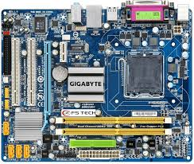
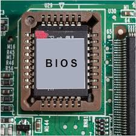
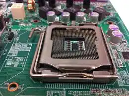

CPU Components
| SR.NO |
Name |
Img |
Discription |
| 1 |
Cooling Fan |
 |
A CPU cooling fan is automatically used by your computer to keep the central processing unit (CPU) cool by drawing in cool air and blowing it over the CPU, effectively dissipating heat generated during processing; |
| 2 |
Storage |
 storage.jpeg) |
Computers rely upon two types of storage, classified as either primary storage or secondary storage. Primary storage (which is also known as main memory, |
| 3 |
MotherBoard |
 |
A motherboard and CPU work together to connect and communicate with a computer's hardware. The motherboard is the circuit board that connects the CPU and other components, while the CPU is the chip that processes instructions. |
| 4 |
Hard Drive |
 hard drive.jpeg) |
A hard drive is a piece of hardware that stores digital data and content on a computer. It's a fundamental component of computers and other electronic devices. |
| 5 |
Case |
 |
A computer case, also known as a computer chassis, tower, system unit, cabinet, base unit, or simply case, is the enclosure that contains most of the ...
|
| 6 |
Power Supply |
 power supply.jpeg) |
A power supply is an electrical device that supplies electric power to an electrical load. The main purpose of a power supply is to convert electric current from a source to the correct voltage, current, and frequency to power the load. |
| 7 |
Register |
 |
A register is a temporary storage space in a computer's CPU that stores data and instructions |
| 8 |
Storage |
|
Memory is the process of storing and retrieving information from the brain. |
| 9 |
Video Card |
 |
video card, also known as a graphics processing unit (GPU), is a hardware component that displays images, videos, and animations on a computer monitor |
| 10 |
USB |
 |
. It is used to connect downstream peripherals to a host device.Universal Serial Bus |
| 11 |
(BIOS) Basic Input Output System |
 |
BIOS (basic input/output system) is a program that initializes a computer's hardware and loads the operating system. |
| 12 |
Socket |
 |
A CPU socket or CPU slot is designed with thousands of pins or contact points for power and data transfer between the CPU and the rest of the processors. |
| 13 |
Buses |
 buses.jpeg) |
Local buses are used to connect various internal peripherals such as a printer or hard drive to the system board. |
| 14 |
Cache |
 |
Cache memory is an indispensable component of modern computer systems, acting as a high-speed buffer between the CPU and the main memory. |
| 15 |
Controls Unit |
 |
A control unit (CU) is a key component of a computer's central processing unit (CPU) that controls the processor's operation |